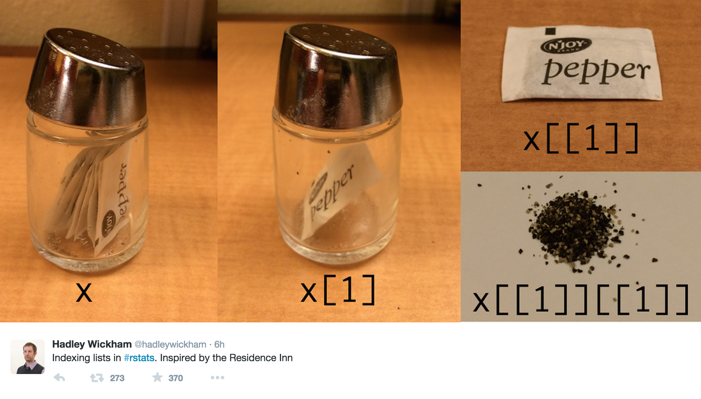

Subsetting
Duke University
Subsetting in general
R has three subsetting operators ([, [[, and $). The behavior of these operators will depend on the object (class) they are being used with.
In general there are 6 different types of subsetting that can be performed:
Positive integer
Negative integer
Logical value
Empty
Zero valued / NULL
Character value (names)
[
Integer subsetting: values by index
Positive subsetting
Note that R starts indexing at 1.
Logical subsetting
Returns values that correspond to TRUE in the logical vector.
Empty and zero subsetting
Character value subsetting
If the vector has names, selects elements whose names correspond to the values in the character vector.
This is a great way to subset because position is fragile, but the name is usually more robust as we manipulate our object.
Breaking subsetting
Out of bounds
- returns NA for atomic vector
- returns NULL for generic vector (list)
- no warning!
[[ and $
[[
Atomic vectors
[[ subsets like [ except it can only subset for a single value
Hadley’s analogy 1


Hadley’s analogy 2
[[ vs $
$ is equivalent to [[ but it only works for named lists and it uses partial matching for names.
Be careful of the last one!
A common error
Why does the following code not work?
The expression x$y gets directly interpreted as x[["y"]] by R, note the inclusion of the "s, this is not the same as the expression x[[y]].
Exercise
Below are 100 values,
x = c(56, 3, 17, 2, 4, 9, 6, 5, 19, 5, 2, 3, 5, 0, 13, 12, 6,
31, 10, 21, 8, 4, 1, 1, 2, 5, 16, 1, 3, 8, 1,
3, 4, 8, 5, 2, 8, 6, 18, 40, 10, 20, 1, 27, 2, 11, 14, 5, 7,
0, 3, 0, 7, 0, 8, 10, 10, 12, 8, 82,
21, 3, 34, 55, 18, 2, 9, 29, 1, 4, 7, 14, 7, 1, 2, 7,
4, 74, 5, 0, 3, 13, 2, 8, 1, 6, 13, 7, 1, 10,
5, 2, 4, 4, 14, 15, 4, 17, 1, 9)subset to accomplish each of the following:
Select every third value starting at position 2 in x. The first three entries should be
3, 4, 5Remove all values with an odd index (e.g. 1, 3, etc.)
Remove every 4th value, but only if it is odd.
Subsetting data frames
Since data frames have two dimensions, we can subset either rows, columns or both.
Subset rows
Preserving vs simplifying
Most of the time, R’s [ is a preserving operator, in that the returned object will always have the same type/class as the object being subset.
Confusingly, when used with some classes (e.g. data frame, matrix or array) [ becomes a simplifying operator (does not preserve type) - this behavior is instead controlled by the drop argument.
for columns:
Preserving vs simplifying summary
| Type | Simplifying | Preserving |
|---|---|---|
| Atomic Vector | x[[1]] |
x[1] |
| List | x[[1]] |
x[1] |
| Matrix / Array | x[[1]] x[1, ] x[, 1] |
x[1, , drop=FALSE] x[, 1, drop=FALSE] |
| Factor | x[1:4, drop=TRUE] |
x[1:4] x[[1]] |
| Data frame | x[, 1] x[[1]] |
x[, 1, drop=FALSE] x[1] |
Unnest
unnest_wider() vs. unnest_longer() in tidyr
When lists are nested, one can unnest them using the functions
| function | behavior |
|---|---|
unnest_wider() |
turns each element of a list-column into a column. Preserves the number of rows. |
unnest_longer() |
turns each element of a list-column into a row. Preserves the number of columns. |
Example: unnest
# A tibble: 1 × 3
letter index is_vowel
<list> <list> <list>
1 <chr [6]> <int [6]> <lgl [6]>